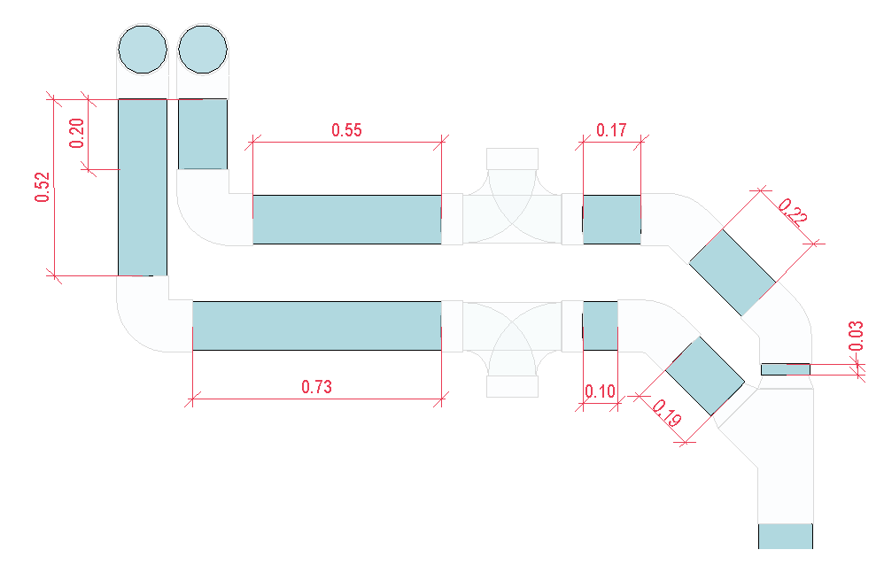

Calculate the length of the pipes, as illustrated in Figure 11, adding a ratio that represents the length of the fittings, both in meters.
 Figure 11 - Plumbing systems quantity takeoff: Ratio Method.
The magnitude of the applied ratio should consider system type and its diameter, considering that these factors can impact the total network length, and therefore, the total cost estimate.
Applicability: This method provides an approximate estimate of the network length and is predominantly applied in preliminary project phases.